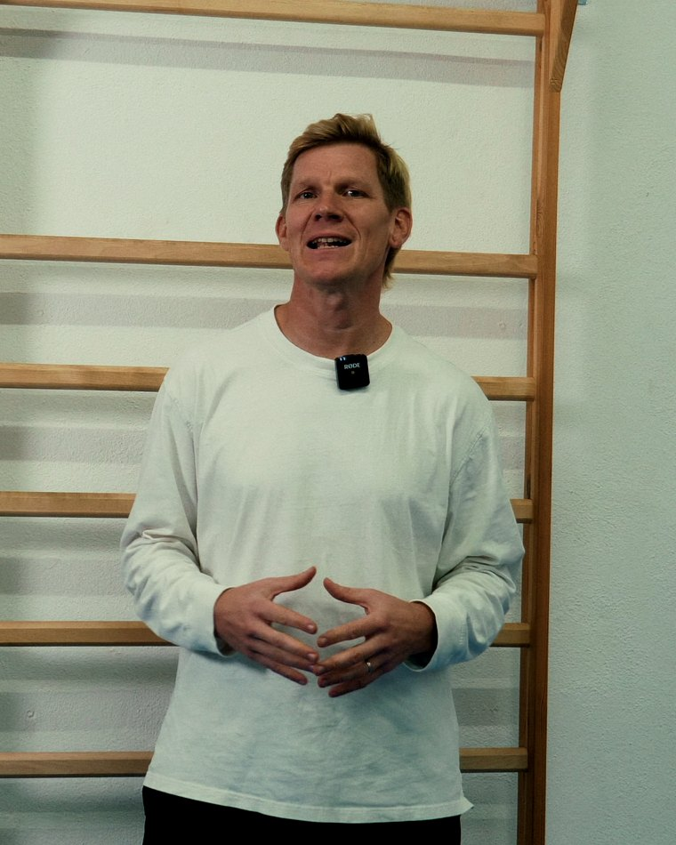

Abnehmen
Fett verlieren, ohne zu hungern und ohne Muskeln zu verlieren. Nachhaltig statt Jo-Jo.
Lerne in 12 Wochen, deinen Körper zu verstehen und selbst zu steuern. Ob abnehmen, zunehmen oder gesund älter werden.

Dein Körper funktioniert mit 40, 50 oder 60 genauso gut. Er braucht nur andere Signale. Statt Verzicht und Extremen setzen wir auf wenige Stellschrauben, die wirklich zählen.
Ändere zwei Dinge. Den Rest darfst du behalten.
30 Minuten Training reichen, wenn sie richtig aufgebaut sind.
Du brauchst Gewohnheiten, die auch ohne Motivation laufen.
Jeder Körper ist anders. Deshalb bekommst du keinen starren Plan, sondern Werkzeuge aus Ernährung, Training und Mindset. Damit steuerst du selbst, wohin es geht.
Fett verlieren, ohne zu hungern und ohne Muskeln zu verlieren. Nachhaltig statt Jo-Jo.
Kraft zurückholen und gezielt zulegen. Auf die gesunde Art.
Kraft, Beweglichkeit und Energie behalten. Mit 50, 60, 70 und darüber hinaus.
Gleicher Werkzeugkasten. Dein Ziel.
Was dein Körper braucht und wie er auf Essen, Training und Stress reagiert.
Warum Ernährung, Bewegung und Kopf zusammenspielen. Ohne Mythen und ohne Verbote.
Was du an vollen Tagen tust, nach einer Pause oder wenn mal etwas zwickt.
Kraft aufbauen, Gewicht verlieren oder zulegen, mehr Energie haben. So, wie du es willst.
Das Ergebnis: Du wirst fit und alterst gesund. Mit Werkzeugen, die zu deinem Körper passen.
Tipps gibt es überall. Was fehlt, ist die richtige Reihenfolge. Deshalb lernst du jede Woche ein neues Werkzeug, bis es sitzt.
Im Gruppen-Call per Zoom beantwortet Florian deine Fragen. Vorher sprechen wir persönlich mit dir über deine Ziele. Du bist nie allein mit dem Plan.
Standort bestimmen, erste Ernährungs-Stellschrauben, Einstieg ins Krafttraining.
Training steigern, Mobility-Routine etablieren, Protein im Alltag umsetzen.
Stress, Schlaf, Geschäftsessen, Reisen: Werkzeuge für echte Situationen.
Du steuerst selbst und weißt, was zu tun ist. Auch nach dem Kurs.
„Ich bin selbst über 40. Ich weiß, wie es sich anfühlt, wenn das Alte nicht mehr funktioniert.“
Seit 10 Jahren begleitet Florian als Personal Trainer in Stuttgart Berufstätige mit wenig Zeit und hohen Ansprüchen. Clean Klar Fit hat er aus genau diesen Erfahrungen entwickelt.
„Was mich an Florian am meisten beeindruckt, ist seine hohe Professionalität. Wir trainieren seit rund fünf Jahren zusammen, und er merkt sofort, was an einem Tag geht und was nicht. Entsprechend passt er das Training an, ohne großes Aufheben und immer genau richtig. Die Fortschritte sprechen für sich: Ich bin stärker, beweglicher und bei vielen Skills deutlich besser geworden. Und weil Florian fachlich immer auf dem neuesten Stand ist, macht auch der Austausch rund ums Training richtig Spaß.“
„Ein großartiger Personal Trainer, den wir von ganzem Herzen empfehlen! Er hat schnell erkannt, wo unsere Herausforderungen liegen, und gemeinsam mit meinem Mann und mir einen Trainingsplan entwickelt, der uns unseren Zielen wirklich nähergebracht hat. Dabei hat er unsere Lebenssituation als Familie mit Kindern immer berücksichtigt und das Training perfekt auf uns abgestimmt, von der Ernährung bis zu den einzelnen Sporteinheiten. Sogar Training auf dem Spielplatz hat er eingebaut, damit wir die Kinder mitnehmen konnten. Wer Wert auf Erfahrung und Qualität legt und beim Training auch gerne lacht, ist bei ihm genau richtig!“
„Seit 4 Jahren Stammkunde und für mich eine der besten Entscheidungen im Leben: in Körper und Gesundheit zu investieren. Super maßgeschneiderte Trainings, Coaching, super Flexibilität, höchste Professionalität und eine theoretische und praktische Ahnung von der Materie, welche ich mir in einem Gym nicht vorstellen kann. Ich kann jedem zu 100 % weiterempfehlen und sage Danke!“
„Perfektes Training, das auf meine Bedürfnisse optimal eingeht. Florian ist extrem versiert und greift auf ein sehr breites Spektrum von Trainingsmöglichkeiten zurück.“
„Seit 1 Jahr Kunde und mehr als zufrieden mit den Ergebnissen. Das Training ist individuell abgestimmt und durchdacht, dadurch äußerst effektiv.“
Wir starten, sobald 30 Menschen auf der Warteliste stehen. Bis dahin lernen wir dich persönlich kennen.
Nein. Muskeln und Beweglichkeit lassen sich in jedem Alter aufbauen. Im persönlichen Vorgespräch klären wir, wo du stehst und was du dir vornimmst.
Du trägst dich unverbindlich ein. Danach rufen wir dich an und sprechen über deine Ziele und Erwartungen. Der Kurs startet, sobald 30 Menschen auf der Warteliste stehen.
Sobald 30 Menschen auf der Warteliste stehen. Du bekommst rechtzeitig eine Nachricht mit Startdatum und allen Details.
Nein. Die Warteliste ist unverbindlich und kostenlos. Du entscheidest erst beim Start, ob du teilnimmst.
Die Trainings dauern rund 30 Minuten. Dazu kommen eine kurze Mobility-Routine und der wöchentliche Live-Call per Zoom.
Deine Daten geben wir nicht weiter. Nur wenn du den Kurs buchst, nutzen wir sie, soweit nötig, für die Abrechnung und die Abwicklung des Kurses. Mehr dazu in der Datenschutzerklärung.
Sprich vorher mit deinem Arzt oder deiner Ärztin, besonders bei Herz-Kreislauf-Erkrankungen sowie Gelenk- oder Rückenproblemen. Im Vorgespräch besprechen wir deine Situation. Der Kurs ersetzt keine ärztliche Behandlung.